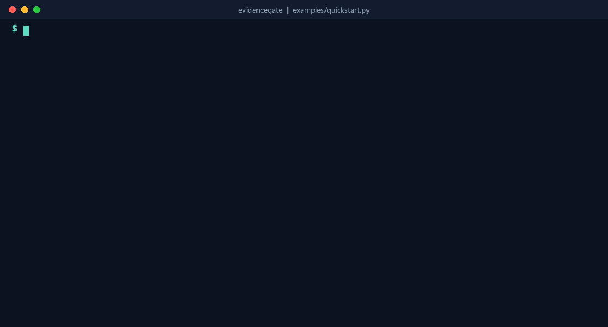
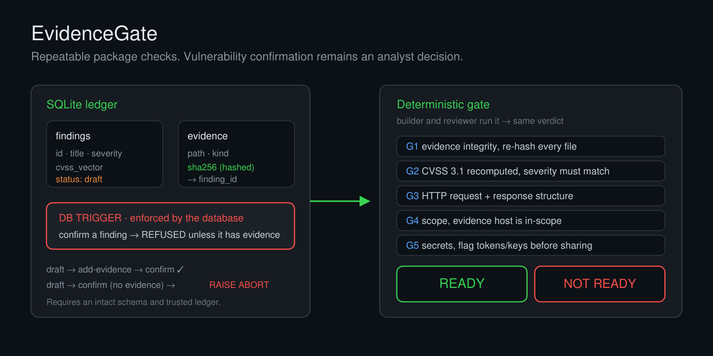

EVIDENCE INTEGRITY · CVSS 3.1 · CAPTURE STRUCTURE · SCOPE · SECRET PATTERNS
A security finding is only as good as the proof behind it. EvidenceGate keeps findings and evidence references in a small SQLite ledger and enforces one rule at the database level: a finding cannot be marked confirmed unless it has a hashed evidence record. A separate, deterministic gate then re-checks the whole package and prints a single READY or NOT READY verdict for the configured checks.

Typeset from a verified run of python examples/quickstart.py. Local paths are normalised and the gate report is condensed to one line per check. The capture is invented, not taken from a service, and no target is contacted.

--in-scope means scope was not checked, and the report says so.python evidencegate.py init assessment.db
python evidencegate.py add-finding assessment.db --id F-01 --title "Candidate IDOR" --severity MEDIUM --cvss "CVSS:3.1/AV:N/AC:L/PR:L/UI:N/S:U/C:H/I:N/A:N"
python evidencegate.py add-evidence assessment.db --finding F-01 --file proof/idor.txt --kind http
python evidencegate.py confirm assessment.db --id F-01
python evidencegate.py gate assessment.db --evidence-root . --in-scope example.test
# Exit codes: 0 checks passed, 1 checks failed, 2 invalid input
confirmed status is a recorded analyst decision; the tool enforces that supporting evidence is present, not the truth of that decision. Hashes are not signatures: keep the ledger and a trusted hash reference protected separately. HTTP/2 binary captures and non-HTTP proof formats are outside the HTTP checks. Cite the tool with the repository's CITATION.cff.